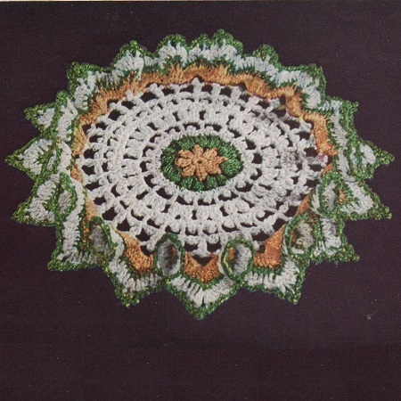

Pert Ruffle Doily Pattern
MATERIALS:
AMERICAN THREAD COMPANY The Famous "PURITAN" MERCERIZED CROCHET COTTON, Article 40 1 ball each White, Yellow and Forest Green or colors of your choice
or
The Famous "PURITAN" STAR SPANGLED MERCERIZED CROCHET COTTON, Article 40 1 ball each Silver Spangle, Yellow Spangle and Green Spangle or colors of your choice.
Steel crochet hook No. 7 or No. 8
Approximate size of doily: 9 inches in diameter.
With Yellow Chain (ch) 5, join to form a ring, ch 1 and work 8 single crochet (sc) in ring, join in 1st sc.
2nd Rnd: Ch 3, 2 double crochet (dc) in same space keeping last loop of each dc on hook, thread over and work off all loops at one time, * ch 3, cluster st in next sc (cluster st: 3 dc in same space keeping last loop of each dc on hook, thread over and work off all loops at one time), repeat from * 6 times, ch 3, join in top of 1st cluster st, cut thread.
3rd Rnd: Attach Green in any loop, ch 3 (counts as part of 1st cluster st), 2 cluster sts with ch 3 between in same space, * ch 3, 2 cluster sts with ch 3 between in next loop, repeat from * all around, ch 3, join, cut thread.
4th Rnd: Attach Silver Spangle or White in top of any cluster st, sc in same space, * 2 sc in next loop, ch 3, slip stitch (sl st) in top of last sc for picot, sc in same loop, sc in next cluster st, repeat from * all around ending to correspond, join.
5th Rnd: Ch 8, skip 1 sc, picot and 1 sc, dc in next sc, * ch 5, skip 1 sc, picot and 1 sc, dc in next sc, repeat from * all around, ch 5, join.
6th Rnd: Sl st into loop and with White or Silver Spangle work same as 3rd round.
7th Rnd: Ch 1, sc in same space, * 2 sc, ch 3 picot, 1 sc in next loop, sc in next cluster st, repeat from * all around ending to correspond, join.
8th Rnd: Ch 7, dc in 4th st from hook, * dc in center sc between next 2 picots of previous round, ch 4, dc in 4th st from hook, repeat from * all around ending to correspond, join in 3rd st of ch.
9th Rnd: Ch 3, dc in same space, ch 3, sl st in top of dc for picot, * ch 4, 2 dc in next dc keeping last loop of each dc on hook, thread over and work off all loops at once time (2 dc cluster st), ch 3, sl st in top of cluster st just made for picot, repeat from * all around ending to correspond, ch 4, join, cut thread.
10th Rnd: Attach Yellow in any loop, * ch 6, sc in next loop, repeat from * all around, ch 6, join.
11 th Rnd: Sl st into loop, ch 3, 4 dc, ch 3, 5 dc in same loop, * 5 dc, ch 3, 5 dc in next loop, repeat from * all around, join, cut Yellow.
12th Rnd: Attach Green and work 1 sc in each dc and 1 sc, ch 3, 1 sc in each ch 3 loop, join, cut thread.
13th Rnd: Attach White or Silver Spangle, ch 3, and work 1 dc in each sc and 2 dc, ch 3, 2 dc in each ch 3 loop, join, cut thread.
14th Rnd: Attach Green in any ch 3 loop, ** ch 3, sc in same space, ch 3, sc in next dc, * ch 3, skip 2 dc, sc in next dc, repeat from * 4 times, ch 3, sc in next ch 3 loop, ch 3, sc in same space, ch 3, sc in next dc, ch 3, skip 2 dc, sc in next dc, ch 3, skip 2 dc, sc in next dc, ch 1, drop loop from hook, counting backwards, skip 7 loops just made, insert hook in next loop, pick up dropped loop and pull through, ch 1, skip 2 dc, sc in next dc, * ch 3, skip 2 dc, sc in next dc, repeat from * once, ch 3, sc in next ch 3 loop, repeat from ** all around ending to correspond, join, cut thread.
HOME